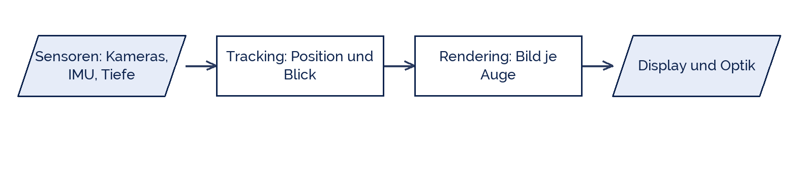

tjuusitalo
tjuusitalo
Good morning!
Nur das Schöne wird die Welt retten!
Fjodor Dostojewski
Nicht verzagen, Doc Alvers fragen!
Informatik — Grundkurs 12
Erweiterte und virtuelle Realität
Mensch-Maschine-Interaktion, die Bauteile einer Datenbrille — und ein Test
Nicht verzagen, Doc Alvers fragen!
Kapitel 01
Die Begriffe
AR, VR und was dazwischen liegt
Nicht verzagen, Doc Alvers fragen!
Das Realitäts-Virtualitäts-Kontinuum
| Stufe | heißt | Beispiel |
|---|---|---|
| Realität | die Welt, ohne Zusatz | der Blick aus dem Fenster |
| Augmented Reality | Zusatzinformation im realen Bild | Navigationspfeil auf der Straße |
| Mixed Reality | virtuelle Objekte, die die Umgebung kennen | Möbel, das an der Wand steht |
| Virtual Reality | vollständig künstliche Umgebung | Flugsimulator, Spiel |
Milgram beschrieb dieses Kontinuum 1994 — von ganz real bis ganz virtuell
Der Unterschied AR zu MR: kennt das virtuelle Objekt die echte Umgebung?
Nicht verzagen, Doc Alvers fragen!
Wozu das jeweils taugt
AR hilft bei Arbeit an einem realen Gegenstand: Wartung, Montage, Chirurgie
VR taugt für Situationen, die real zu teuer oder zu gefährlich sind
Beides taugt schlecht für Aufgaben, die Präzision der Hände verlangen
Und beides ermüdet schneller als ein Bildschirm — die Tragedauer ist begrenzt
Deshalb ist die erste Frage nicht „was geht?“, sondern „wofür lohnt es?“
Nicht verzagen, Doc Alvers fragen!
Kapitel 02
Die Bauteile
Was in einer Datenbrille steckt
Nicht verzagen, Doc Alvers fragen!
Die Kette in einer Datenbrille
Das Ganze muss 60- bis 120-mal pro Sekunde durchlaufen — sonst wird es unangenehm
Die Latenz vom Kopfdrehen bis zum passenden Bild ist die kritische Größe

Nicht verzagen, Doc Alvers fragen!
Die Bauteile im Einzelnen
| Bauteil | Aufgabe | Grenze |
|---|---|---|
| Kameras | Umgebung erfassen, Marker erkennen | Licht, Spiegelungen |
| Lagesensor (IMU) | Kopfbewegung messen | driftet ohne Korrektur |
| Tiefensensor | Abstände messen | Reichweite, Sonnenlicht |
| Rechenwerk | Tracking und Bildberechnung | Wärme und Akku |
| Display und Optik | zwei Bilder, je Auge eines | Sichtfeld, Auflösung |
Der begrenzende Faktor ist fast immer die Latenz oder der Akku, nicht die Auflösung
Nicht verzagen, Doc Alvers fragen!
Kapitel 03
Bewerten
Ausprobieren und einordnen
Nicht verzagen, Doc Alvers fragen!
Der Bewertungsbogen
| Kriterium | Frage |
|---|---|
| Nutzen | Was kann ich damit, was vorher nicht ging? |
| Bedienung | Verstehe ich ohne Erklärung, was zu tun ist? |
| Belastung | Wie fühlt es sich nach fünf Minuten an? |
| Daten | Was nimmt das Gerät auf, und wohin geht es? |
| Aufwand | Rechtfertigt der Nutzen den Aufwand? |
Die Zeile Daten wird bei AR gern übersehen: eine Datenbrille filmt ständig die Umgebung
Damit filmt sie auch Menschen, die nicht gefragt wurden
Nicht verzagen, Doc Alvers fragen!
Die kritische Größe ist die Latenz: Wer den Kopf dreht, erwartet das passende Bild sofort. Alles andere macht Übelkeit.
Merksatz
Nicht verzagen, Doc Alvers fragen!
Fun Facts: AR und VR
Das erste head-mounted display baute Ivan Sutherland 1968 — es hing an der Decke
Sein Spitzname: Sword of Damocles, weil es so schwer war
Motion Sickness entsteht, wenn Auge und Gleichgewichtssinn Verschiedenes melden
Unter 20 Millisekunden Latenz gilt als Ziel — darüber merkt man die Verzögerung
Pokémon Go brachte 2016 AR in den Alltag — technisch simpel, in der Wirkung enorm
Nicht verzagen, Doc Alvers fragen!
Eure Aufgabe
Probiert die AR-Demos auf dem Tablet aus — mindestens zwei verschiedene
Füllt für jede den Bewertungsbogen aus
Ordnet jede Demo im Kontinuum ein: AR, MR oder VR?
Beschreibt die Sensorkette einer Demo: was wird gemessen, was berechnet?
Schreibt drei Sätze: Für welche Aufgabe an unserer Schule lohnt sich AR wirklich?
Nicht verzagen, Doc Alvers fragen!